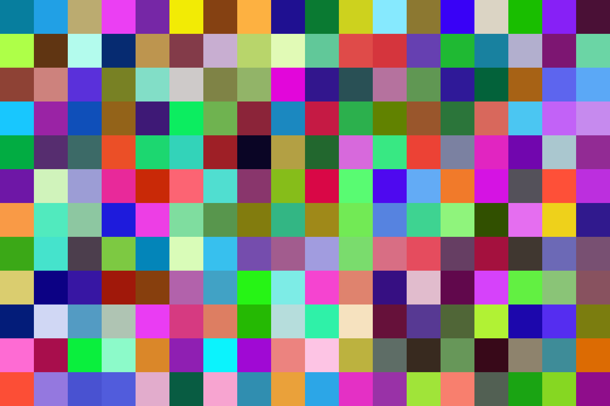
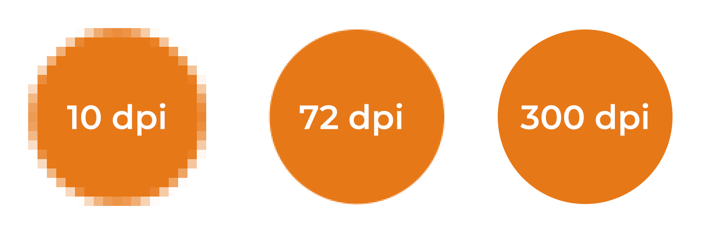

zijn kleurmodellen?
Kleurmodellen zijn manieren waarop apparaten (zoals computers, telefoons en printers) kleuren “begrijpen” en weergeven. In plaats van dat iedereen een kleur op een andere manier ziet, helpt een kleurmodel om vast te leggen met getallen wat precies bedoeld wordt met “rood”, “blauw” of “groen”.
Op die manier weet elk apparaat: dit is kleur X, op welke manier dan ook.
Kleurmodellen die je vaak tegenkomt
1. RGB-model
RGB staat voor Rood (Red), Groen (Green) en Blauw (Blue).
Dit model werkt met licht: je mengt rood, groen en blauw licht om allerlei kleuren te maken. Als je alle drie de kleuren vol aanzet, krijg je wit. Zet je ze allemaal uit, dan krijg je zwart.
Het RGB-model wordt vooral gebruikt voor beeldschermen (zoals computers, telefoons en televisies).
Elke kleur op je scherm wordt opgebouwd uit een combinatie van deze drie kleuren. Door verschillende hoeveelheden rood, groen en blauw te mengen, kun je miljoenen kleuren maken.
Bijvoorbeeld:
- Rood = (255, 0, 0)
- Groen = (0, 255, 0)
- Blauw = (0, 0, 255)
- Wit = (255, 255, 255)
- Zwart = (0, 0, 0)

2. CMYK-model
Het CMYK-model wordt gebruikt voor printers.
CMYK staat voor Cyaan, Magenta, Yellow (geel) en Key (zwart).
Printers werken met inkt, dus in plaats van licht toe te voegen (zoals bij RGB), trekken ze licht af.
Door verschillende hoeveelheden van deze inkten te mengen, ontstaat de gewenste kleur op papier.
Omdat inkt kleuren wegneemt (licht absorbeert), noem je dit een “subtactief” model.
CMYK gebruik je vooral voor drukwerk: flyers, posters, boeken, etc.
Voorbeelden:
- Cyaan = Blauw achtig
- Magenta = Paarsroze
- Geel = Geel
- Zwart = Zorgt voor schaduw en diepte
3. HEX-model
HEX is een manier om kleuren te schrijven in een code, vaak gebruikt in webdesign.
Een HEX-kleur ziet eruit als #XXXXXX, waarbij elke X een cijfer of letter is (0–9, A–F).
HEX is eigenlijk een andere manier om hetzelfde als RGB uit te drukken, maar dan in één code.
Bijvoorbeeld:
Voorbeeld: #FFFFFF is wit, #FF0000 is rood, #00FF00 is groen.

Wat zijn pixels?
Pixels zijn kleine, gekleurde puntjes waaruit digitale beelden zijn opgebouwd. Hoe meer pixels een afbeelding heeft, hoe scherper het beeld wordt.
Het woord ‘pixel’ komt van de Engelse woorden picture en element en wordt vaak afgekort tot px.
Pixelbestanden zoals JPG, PNG, BMP en GIF kun je niet oneindig vergroten, omdat ze dan onscherp worden.
Vectorbestanden, zoals EPS en AI, bestaan uit lijnen en punten en blijven altijd scherp, ongeacht het formaat.
Wat houdt resolutie in?
De resolutie geeft aan uit hoeveel pixels een digitaal beeld bestaat. Hoe hoger de resolutie, hoe meer pixels er per centimeter of inch in een afbeelding zitten. Dat zorgt voor een scherper en gedetailleerder beeld.
Een afbeelding met een lage resolutie heeft minder pixels, waardoor het beeld korrelig of wazig kan worden, vooral als je het vergroot.
Bij drukwerk wordt resolutie vaak uitgedrukt in DPI (Dots per Inch) of PPI (Pixels per Inch).
- Voor grote formaten zoals posters of spandoeken is meestal 150 DPI genoeg.
- Voor kleine, gedetailleerde drukwerken zoals flyers of folders is 300 DPI beter.
Kort gezegd: hoe hoger de resolutie, hoe scherper het resultaat.
